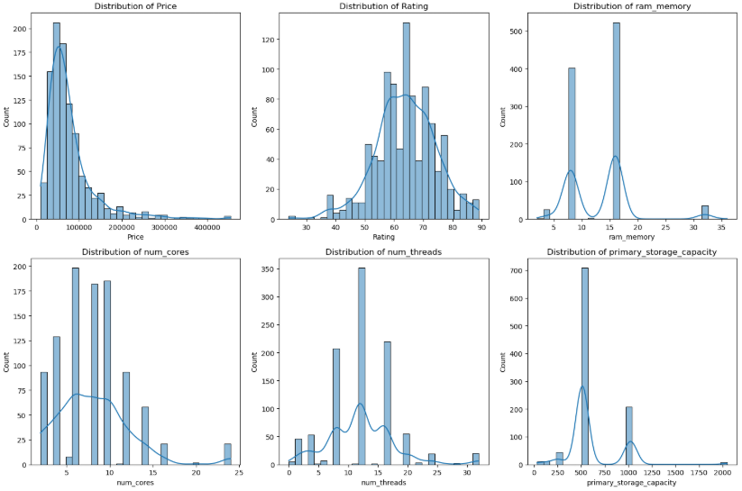

Laptop Clustering Report
Introduction to the Problem
With so many laptop models available, consumers are likely to be swamped by choice. In this project, clustering is applied to see if meaningful patterns and groupings can be extracted on the basis of hardware specifications, price, and performance. The goal is to reveal distinct consumer segments, like budget, mid-range, gamer, or pro users, solely from data to assist both consumers and producers in making decisions.
What is Clustering and How Does it Work?
Clustering is a machine learning technique that groups similar data points together without predefined labels. We applied KMeans clustering, which partitions the data into k clusters by minimizing the variance within each cluster. The algorithm iteratively assigns points to the nearest cluster center, recalculating centers until convergence. To visualize high-dimensional data, we also used Principal Component Analysis (PCA), a dimensionality reduction technique that helps present complex patterns in two dimensions.
Introduce the Data
The dataset contains 991 rows and 22 columns of laptop specifications collected from various manufacturers. Each entry represents a unique laptop configuration and includes:
- brand: Laptop manufacturer
- Model: Model name of the laptop
- Price: Retail price in INR
- Rating: User rating out of 100
- processor_brand: Brand of the CPU
- processor_tier: Category of processor
- num_cores: Number of physical cores in the processor
- num_threads: Number of threads the CPU can execute
- ram_memory: RAM size in GB
- primary_storage_type: Type of main storage
- primary_storage_capacity: Size of primary storage in GB
- secondary_storage_type: Type of secondary storage
- secondary_storage_capacity: Size of secondary storage in GB
- gpu_brand: GPU manufacturer
- gpu_type: Type of graphics processor
- is_touch_screen: Whether the laptop has a touch-enabled screen
- display_size: Physical screen size in inches
- resolution_width and resolution_height: Pixel dimensions of the screen
- OS: Operating system
- year_of_warranty: Duration of warranty in years
This diverse set of features was ideal for clustering because it spans performance, design, and pricing aspects of laptops, allowing us to identify natural groupings within the market.
Dataset used from Kaggle can be accessed here: GPU Benchmarks Dataset
Data Understanding and Visualization
We explored numerical distributions and correlations between key features. Histograms showed that most laptops fall into mid-range categories (e.g., 8GB RAM, mid-price). A correlation heatmap confirmed strong relationships between variables like processor tier, number of threads, and price. Boxplots indicated that higher RAM and better processor tiers generally increase laptop price. A countplot for brand distribution showed that certain manufacturers dominate specific segments of the market, giving insight into potential brand-based clustering biases.
The figure below presents the distribution of several core numeric features. The price distribution is heavily right-skewed, with most laptops priced below ₹100,000. Ratings are normally distributed, centering around 65–70. RAM shows two major modes around 8GB and 16GB, reflecting standard configurations. Processor cores and threads have spikes at typical architecture levels, such as 4, 8, and 12 threads. Primary storage capacity shows strong peaks at 512GB and 1TB, suggesting market standardization. These trends validate our choice of features for clustering and hint at potential grouping behavior in the dataset.

Pre-processing the Data
Before modeling, the dataset needed to be preprocessed to ensure quality and consistency. Irrelevant columns like the laptop index and model name were removed to reduce noise. The 'year_of_warranty' column, which originally contained mixed data types, was cleaned and converted into integers for numerical processing. Categorical variables such as GPU brand, processor tier, and operating system were encoded into numerical values using label encoding so that they could be properly interpreted by clustering algorithms. To avoid bias caused by differing feature scales, all numerical variables were standardized using the StandardScaler method. This normalization process brought all values into the same range, allowing each feature to contribute proportionally to the distance calculations during clustering.
Modeling (Clustering)
Using the Elbow Method, we determined that k = 4 was the most suitable number of clusters. KMeans was selected over hierarchical clustering due to its scalability and interpretability. After clustering, PCA was used to reduce dimensions for visualization. The resulting scatter plot showed clearly separated clusters, confirming that the model found consistent grouping patterns.
The PCA plot below reveals the four clusters found by the KMeans model. The clusters all occupy a specific region of the 2D principal component space, which reveals that the model was able to capture underlying variance in the data, and the fact that clusters are separated reveals that the features selected (RAM, number of cores, and price) have a strong role in separating product types.
To further describe these clusters, we computed average values for important features in each set. The table below represents important specifications such as price, rating, RAM, processor cores, threads, and storage.
Cluster 3 averages the highest price (~₹184,545), RAM (~20GB), and core/thread counts, implying high-performance laptops for gaming or professional workloads. Cluster 1 is the lowest priced (~₹49,000) with modest specs, making it the best for general-purpose use. Cluster 0 and 2 fall between these extremes, covering balanced and power-user segments. These figures validate our qualitative analysis and ensure that the clusters represent actual market segments in the real world.
Storytelling (Clustering Analysis)
We analyzed each cluster to understand its characteristics. Summary statistics revealed four meaningful segments:
- Cluster 0: Entry-level devices with lower specs and affordable pricing. Ideal for casual use or students on a budget.
- Cluster 1: Mid-tier laptops with balanced specs, targeting general productivity users and light multitasking.
- Cluster 2: High-end machines featuring powerful CPUs, GPUs, and higher prices—targeted toward gamers or creators.
- Cluster 3: Lightweight ultrabooks with strong battery life, solid screens, and premium design, often priced moderately to high.
These insights validate the clustering model and provide an intuitive framework for understanding the market landscape without relying on brand marketing or subjective review scores.
Impact Section
This clustering project has real-world uses. For consumers, it streamlines decision-making by bringing to the forefront clusters that most closely match their needs. For producers, it unveils potential market niches and streamlines product development. Ethical concerns must be taken into account, though. Relying too much on clustering can solidify socioeconomic boundaries, if price is employed as a proxy for capability, and can exclude user interests that are not represented in the data. Transparency, diversity of information sources, and ongoing evaluation are necessary to ensure fair outcomes.
References
- Scikit-learn documentation: https://scikit-learn.org
- Matplotlib and Seaborn for visualization
Jupyter Notebook with all code: Download here